Hello! I'm João Gouveia — Senior Android Engineer.
I build reliable, scalable Android applications using Kotlin, Jetpack Compose, and Clean Architecture. Over the past nine years, I've worked on products ranging from fintech platforms to in-car systems and industrial solutions, always focused on code quality, performance, and developer experience. I'm passionate about improving team collaboration and maintaining a clear technical direction — habits I reinforce through journaling and structured task tracking to continuously evolve as an engineer. Outside of work, I practice Jiu-Jitsu several times a week — it keeps me grounded, disciplined, and sharp, both personally and professionally.
Android
Kotlin
Numpy
Scikit Learn
Tensorflow
Python
Skills
I have over nine years of experience in native Android development, building reliable and scalable applications with Kotlin, Jetpack Compose, and Clean Architecture. My work focuses on maintainability, performance, and a smooth developer experience through modular design and clear architectural decisions. I also contribute to team growth by reviewing code, mentoring developers, and driving modernization initiatives.
My interest in data started during my computer science studies and grew as I explored how statistical and algorithmic concepts connect to real-world applications. Over the past few years, I've completed several bootcamps in data analysis and machine learning, and even built an Android app powered by a model I trained myself. Although my professional focus remains on Android development, learning data science has deepened my understanding of problem-solving, optimization, and system design.
Some curiosities
Visited my dad's job and discovered Paint on his work computer. That simple drawing tool sparked something in me. I saw endless possibilities in that machine. I couldn't stop thinking about what I could create and explore. That day, I begged him to get a computer for home, marking the beginning of my lifelong fascination with technology.
Embarked on my engineering journey at PUC-MG, studying Control and Automation, inspired by a friend who was already in the program at another university. In the first semesters, I discovered programming logic with C++ and immediately fell in love with it. It became the subject I enjoyed studying the most at home, spending hours practicing and solving problems. Along with numerical calculus, these were my best grades, and I knew I had found something special.
Shifted gears to Computer Science at FUMEC, driven by my passion for the programming subjects I loved most in automation. This was also the year I landed my first vacation internship at TCA in Recife. There, I discovered a whole new world — other programming languages beyond C++. Working with PHP opened my eyes to web development and showed me just how vast the programming ecosystem really was. It was my first real taste of professional software development.
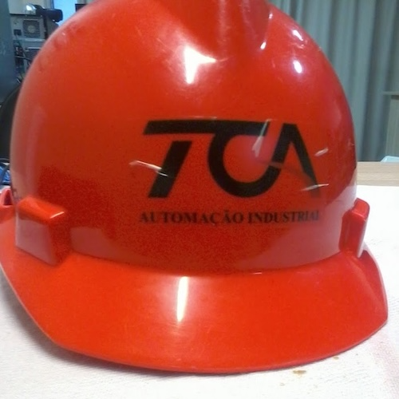
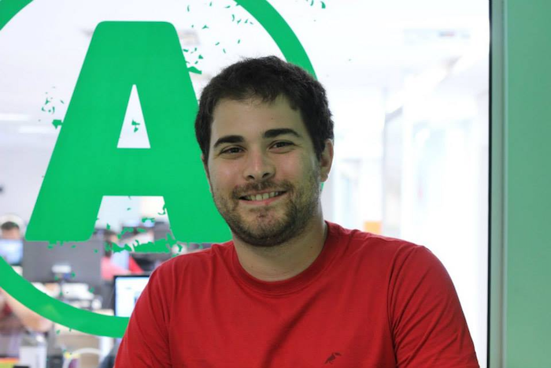
Heard about a company in Belo Horizonte seeking interns who could speak English — Avenue Code. I applied, passed an interesting technical test, and stepped into a whole new world. Working with Ruby on Rails, I realized how much of what I had built manually in PHP was elegantly encapsulated in framework logic. I met amazing people, learned Git and SCRUM, and experienced what professional software development really meant. Two unforgettable years of intense learning, growth, and collaboration that shaped my career foundation.
Graduated with a Computer Science degree — mission accomplished! During these years, I worked mostly at Avenue Code, but also had pivotal experiences at Life Link (my first dive into Android development) and Ioasys (my last role in Brazil). Each opportunity taught me something valuable: I started with simple solutions for problems, then discovered more elegant solutions like handling observer pattern with LiveData and MVVM at Ioasys. University taught me to structure projects systematically and approach challenges methodically. This period shaped how I think about software architecture and problem-solving to this day.
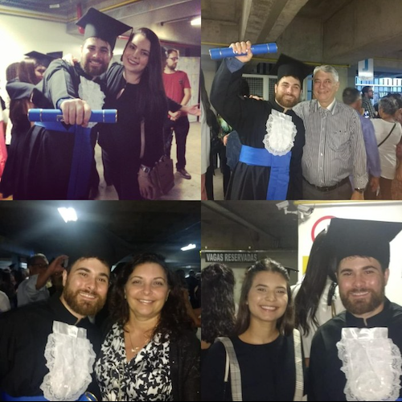
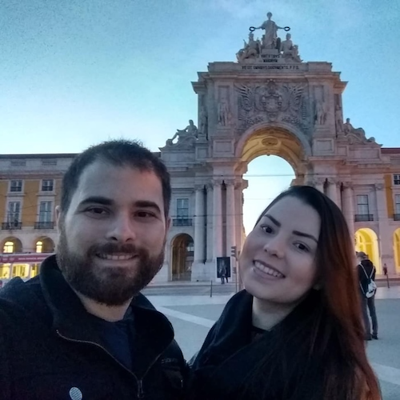
Married my soulmate — the woman who had been by my side since 2013 — and moved to Portugal right after graduation, invited by Critical Techworks. This wasn't just a career move; it was a life transformation. Portugal brought immense professional growth, but even more importantly, profound personal development. I learned resilience, self-awareness, and what it means to face challenges with enthusiasm and unity. The difficulties we overcame together made us stronger. Professionally, I met incredible people who continue to inspire me to this day.
Tied my first white belt in Brazilian Jiu-Jitsu — fulfilling a childhood dream of training a martial art. I came looking to improve my fitness and make friends, but discovered something far deeper: an incredible source of self-knowledge. Jiu-Jitsu taught me self-control, balance, and one of my favorite lessons — finding comfort in discomfort. Training consistently became more than exercise; it became a practice that grounds me, challenges me, and helps me grow both on and off the mat.
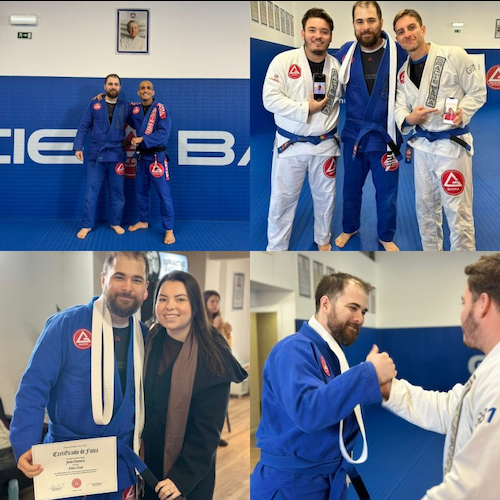
Earned my blue belt — a proud and hard-fought milestone in my BJJ journey. I watched friends get promoted before me, which taught me patience and the invaluable lesson of focusing on my own process, not comparing myself to others. The belt came when my professor saw I was ready, and it felt incredible. Beyond the technical achievement, I made great friends who share this journey with me. Jiu-Jitsu remains a vital part of my life, continuing to teach me discipline, humility, and perseverance every single day.
2024 - CURRENT
android, git, mvi, jetpack-compose, clean-arch, kotlin
Contributing to MB Way, Portugal’s largest instant-payments platform by SIBS, used by over 3 million active users nationwide. I focus on modernizing and maintaining the Android app’s codebase, improving stability and developer productivity, and ensuring that engineering initiatives stay aligned with product and business goals.
- Modernization: Migrated UI modules to Jetpack Compose and adopted Coroutines & Flow to simplify async flows and state handling, improving long-term maintainability.
- Architecture & code quality: Proposed and implemented refactors that improved stability and reduced technical debt; enforceable via code reviews and automated checks.
- Team enablement: Provide mentorship and pair programming for less experienced engineers; introduced structured documentation and a personal-to-team journaling practice to reduce context loss and handover friction.
- Operational impact: Participate in sprint planning and technical decision-making to ensure development work maps to business goals and product priorities.
- Issue resolution: Rapidly identify root causes in production and propose pragmatic fixes and longer-term solutions to recurring problems.
Website: https://www.sibs.com
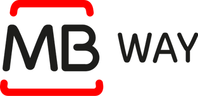
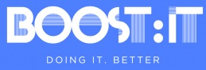
2024 - 2024
android, git, mvi, jetpack-compose, clean-arch, kotlin
Contributed to a data-intensive Android project at SymphonyAI, developed through Boost IT, aimed at helping supermarkets optimize shelf item management across hundreds of stores. My role focused on refactoring core modules to efficiently process large image datasets and modernizing the UI with Jetpack Compose for improved responsiveness and maintainability.
- Performance & scalability: Refactored critical data-handling components to support large image sets processed from external cameras, improving app performance.
- UI modernization: Led the migration of legacy XML layouts to Jetpack Compose, reducing UI boilerplate and enabling faster iteration on design changes.
- Architecture improvements: Applied MVI pattern to improve separation of concerns and simplify data flow management.
- Collaboration: Worked closely with backend and data teams to ensure smooth integration of image-processing outputs and accurate visual guidance in the app's task lists.
Website: https://www.symphonyai.com
2022 - 2024
android, scrum, git, mvvm, jetpack-compose, kmm, flow, kotlin
Contributed to the development of RefineMySite, Bosch's global construction management platform used across multiple countries to coordinate field teams and planners in real time. Worked on core Android features enabling offline access, media synchronization, and notifications for on-site updates.
- Offline capabilities: Implemented and optimized offline mode to ensure reliability for field teams working in environments with limited or no connectivity, improving task completion rates.
- Data synchronization: Developed image upload and background sync mechanisms, ensuring consistent project data between field devices and the central platform.
- Notifications & UX: Delivered push notification features to keep distributed teams informed of changes in real time, enhancing collaboration speed and accountability.
- Cross-team collaboration: Worked closely with international teams in Germany and Portugal to align app behavior and architectural standards across platforms.
- Architecture & tooling: Applied Clean Architecture, MVVM, and KMM for shared logic, while adopting Flow for reactive data handling.
Website: https://refinemysite.ai/
2019 - 2022
android, scrum, git, mvvm, android-auto, room db, live-data, kotlin
Developed and maintained BMW's next-generation in-car media player — a Kotlin-based Android application integrated into the company's infotainment system across multiple vehicle models. The app supported various audio sources including Spotify, Apple CarPlay, and USB playback, providing a seamless and safe entertainment experience for millions of users worldwide.
- Feature development: Implemented and optimized playback modules, improving audio synchronization and reducing latency during source switching.
- Integrations: Built robust API integrations with Spotify and CarPlay, ensuring compliance with BMW's in-vehicle standards and performance constraints.
- Architecture & performance: Contributed to modularization and architecture improvements using MVVM and LiveData for reactive UI updates.
- Testing & validation: Collaborated with QA and embedded software teams to validate features in automotive environments, ensuring stability and safety compliance.
- Cross-team collaboration: Worked closely with engineering teams in Portugal, Germany, and China to align APIs, coordinate releases, and maintain UX consistency across regions.
Website: https://www.criticaltechworks.com
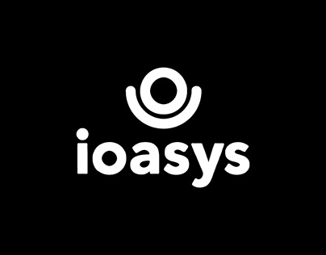
2018 - 2019
android, scrum, git, mvvm, rxjava, java
Contributed to the development of a Java-based Android application connecting teachers and bookstores, focusing on architecture improvements, data persistence, and API integration. This role marked the start of a structured professional growth path, including exposure to Kotlin, testing, and dependency injection.
- Feature development: Implemented core app modules using MVVM, improving code maintainability and scalability.
- Database & API: Integrated Room for local data storage and Retrofit for backend communication, enabling seamless synchronization of teacher-bookstore data.
- Reactive programming: Leveraged RXJava to manage asynchronous tasks and improve app responsiveness.
- Professional growth: Participated in internal workshops on Kotlin, testing, and dependency injection, gaining foundational skills for future Android projects.
- Mentorship: Worked closely with senior developers, receiving guidance on best practices and professional development.
Website: https://ioasys.com.br
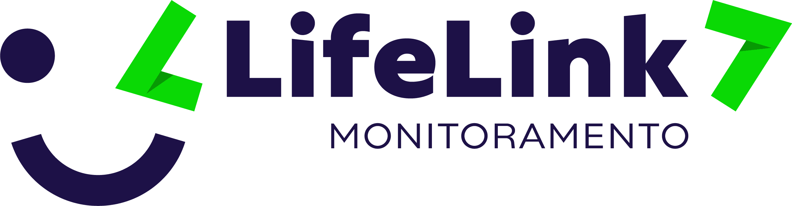
2017 - 2017
android, git, java, bluetooth 4.0
Sole Android developer at an early-stage hardware startup, responsible for building an app from scratch to communicate with a proprietary Bluetooth 4.0 device. Focused on real-time data transmission, hardware integration, and foundational Android development, gaining deep hands-on experience with the full mobile stack.
- App development: Created the Android application enabling real-time data exchange between the device and backend server via API.
- Hardware integration: Collaborated with hardware and backend teams to troubleshoot complex connectivity and communication issues with the Bluetooth device.
- Android fundamentals: Gained extensive experience with Android SDK components, threading, and performance optimization in constrained environments.
- Problem-solving: Learned to independently resolve challenges inherent to early-stage product development, balancing feature delivery with hardware limitations.
Website: https://www.lifelink.com.br
2015 - 2016
ruby-on-rails, ruby, postgresql, git, scrum
Contributed to ACDC, an internal HR management platform for time and vacation tracking, gaining early professional experience in a global, English-speaking environment. Focused on frontend and backend development, database management, and cross-team collaboration.
- Full-stack development: Implemented frontend features using Angular and backend logic with Ruby on Rails, improving overall platform functionality.
- Database management: Worked with PostgreSQL to handle time and vacation data efficiently, ensuring data integrity across multiple branches.
- Collaboration: Coordinated with global teams, developing communication skills and adapting to professional workflows in an English-speaking environment.
- Professional growth: Gained foundational experience in software engineering practices, version control, and agile methodologies.
Website: https://www.avenuecode.com
2014 - 2015
php, mysql
Worked on a sales recording application for a telemarketing team, marking my first professional experience with version control. Focused on backend and frontend tasks, database management, and code versioning fundamentals.
- Application development: Contributed to features for recording and tracking client calls using an internally developed PHP framework.
- Database management: Worked with MySQL to store and manage sales and client information efficiently.
- Version control: Gained initial experience with SVN, learning collaborative workflows and code management practices.
- Frontend tasks: Assisted in minor frontend improvements, acquiring foundational skills in web interface development.
- Professional growth: This role introduced me to structured software development processes and collaboration within a team environment.
2014 - 2014
php, mysql
My very first professional experience in programming, working on an internal file-sharing application for engineering project employees. Focused on PHP development, access control, and understanding corporate software environments.
- Application development: Implemented features for file sharing while respecting user privileges and access permissions.
- Backend experience: Gained foundational knowledge in PHP and structured programming practices within a corporate setting.
- Corporate environment: Learned about software development processes, teamwork, and maintaining code in a professional context.
- Professional growth: This internship introduced me to practical programming and collaboration within an organization.
Website: https://www.timeconsult.com.br
2009 - 2017
Conducted private classes introducing elderly people to digital tools, focusing on practical technology skills, communication, and user guidance. This experience enhanced my ability to teach, explain complex concepts simply, and adapt to different learning paces.
- Digital literacy: Taught essential skills such as using email, social networks (Instagram, Facebook, Gmail), and managing digital communications.
- Practical technology usage: Guided students in tasks like transferring photos from smartphones to PCs and pairing devices at home.
- Adaptable teaching: Customized lessons to individual learning speeds and prior knowledge, improving comprehension and confidence in technology usage.
- Communication skills: Developed patience and the ability to explain technical concepts clearly, a skill transferable to mentoring and team collaboration in professional settings.
InkSight is a high-performance Android application that merges computer vision and deep learning to recognize handwritten digits in real time. Developed as an evolution of the The Data Science Course 2025, it transforms a classic MNIST model into a robust mobile tool.
Built with a focus on Clean Architecture, the app features a decoupled processing pipeline that handles grayscale conversion, central cropping, and TensorFlow Lite inference. It implements custom stability logic to ensure predictions are only triggered when the camera is steady, providing a seamless and non-flickering user experience.
- Intelligent Stability Tracking: Uses histogram-based analysis to detect camera movement and lock predictions for a consistent UI.
- Clean Pipeline Architecture: Decoupled components for frame gating, preprocessing, and inference managed via Hilt DI.
- Real-time ML: Embedded TensorFlow 2.0 model optimized for mobile, running at a targeted responsive frame rate.
- Modern UI/UX: Fully reactive interface built with Jetpack Compose and CameraX Viewfinder.
Tech stack: Kotlin · Jetpack Compose · CameraX · Hilt · TensorFlow Lite · Coroutines · MVVM · Unit Testing
GitHubA personal repository containing solutions to mathematical and algorithmic challenges from Project Euler, implemented in Kotlin. Each problem is solved with clean, readable, and efficient code, leveraging object-oriented principles and Kotlin Coroutines for parallel computation where applicable.
The repository includes a custom Ruby script that automatically updates a Markdown file with the execution time of each solution at every commit. This enables tracking performance improvements and maintaining a high standard of code efficiency over time.
- Algorithmic focus: Solutions emphasize problem-solving skills, mathematical insight, and computational efficiency.
- Parallel execution: Coroutines are used to optimize runtime for computationally intensive problems.
- Automation: Ruby script updates solution metadata automatically, ensuring reproducibility and performance tracking.
- Code quality: Clean Kotlin syntax, modular functions, and adherence to SOLID principles.
Tech stack: Kotlin · Coroutines · Object-Oriented Design · Algorithms · Ruby (automation script)
GitHubA C++ concurrency simulation developed as part of the Udacity C++ Nanodegree Program (Concurrency Module). The project simulates vehicles navigating a city with intersections controlled by traffic lights, demonstrating safe and efficient inter-thread communication.
The simulation implements a thread-safe communication protocol between vehicles and traffic lights using message queues, mutexes, and locks. Traffic lights cycle between red and green phases with randomized durations (4-6 seconds), ensuring realistic vehicle flow and safety at intersections.
- Concurrency: Modern C++ threading, locks, and condition variables to manage vehicle-light interactions.
- Object-Oriented Design: Vehicles, intersections, and traffic lights modeled as classes with clear responsibilities.
- Randomized Traffic Light Phases: Simulates realistic traffic conditions with dynamic timing.
- Thread-Safe Messaging: Message queues ensure consistent communication between traffic lights and vehicles.
Tech stack: C++17 · Threads · Mutex · Condition Variables · Message Queues · Object-Oriented Design
GitHub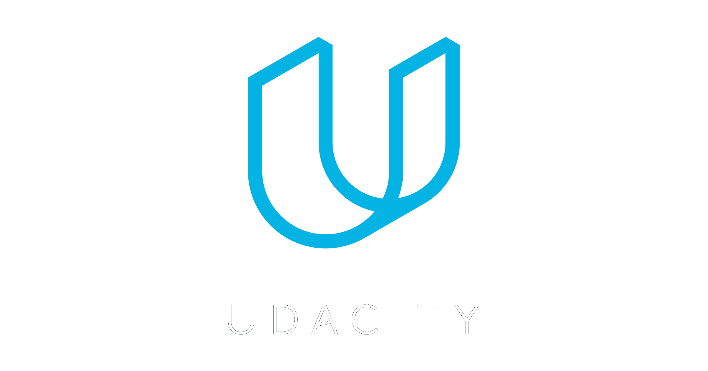
2021
Online Course
- Focused on performance and memory fundamentals relevant to Android NDK.
2014 - 2018
university
2009 - 2014
university